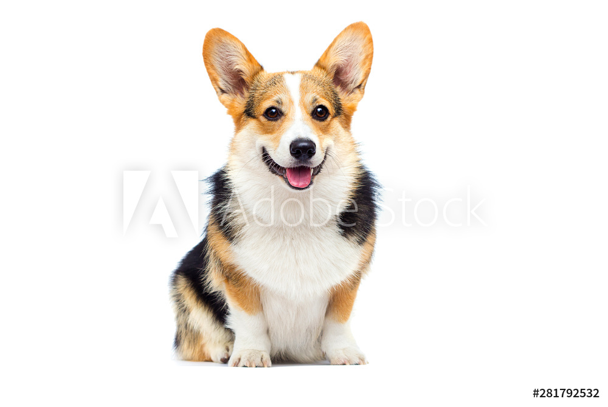

Peggy

This is Peggy. She is a 1 year old Australian Shepard. She is full of energy. She loves playing, walks, and making new friends. She is barely trained, so the owner(s) should be ready for lots of training
Give us a call at 1-844-835-4798 or e-mail info@spcans.ca to adopt
Tucker

This is Tucker. He is a 5 year old corgi. He doesn't have much energy, but he loves to go on walks and play to an extent.
Give us a call at 1-844-835-4798 or e-mail info@spcans.ca to adopt
If you're worried about caring for a dog here's some good tips!